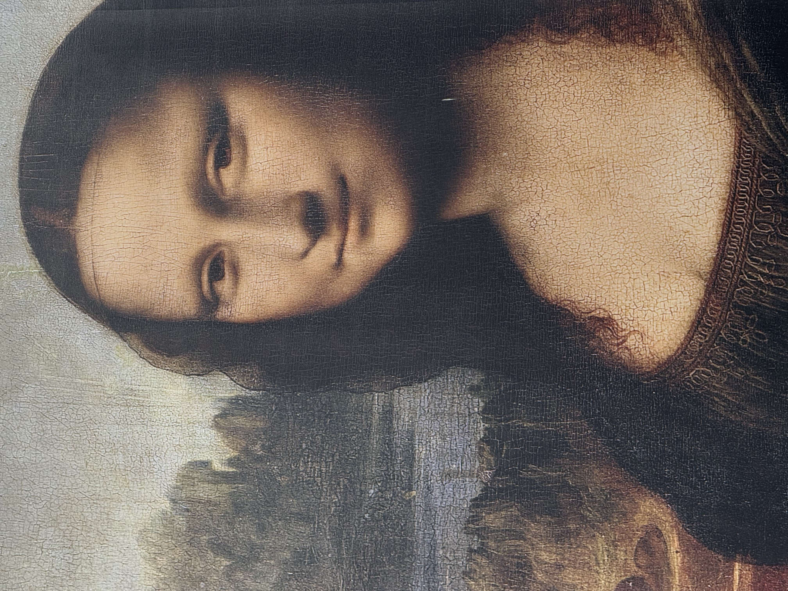
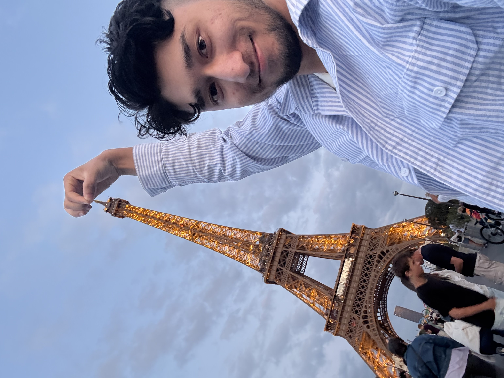
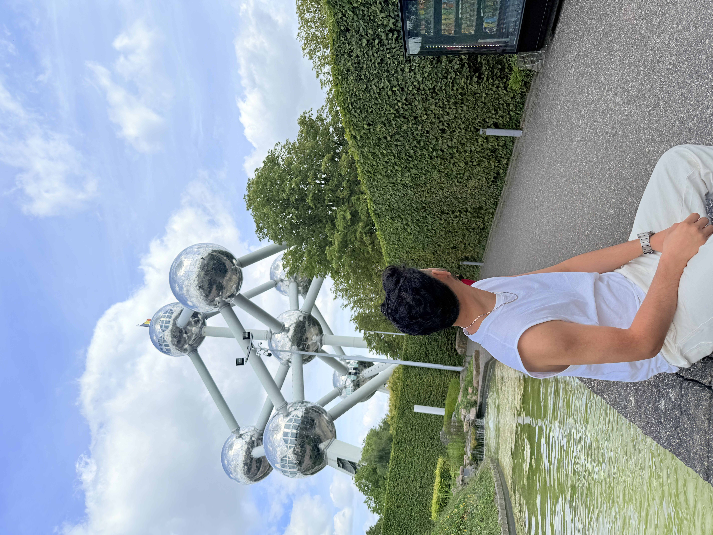
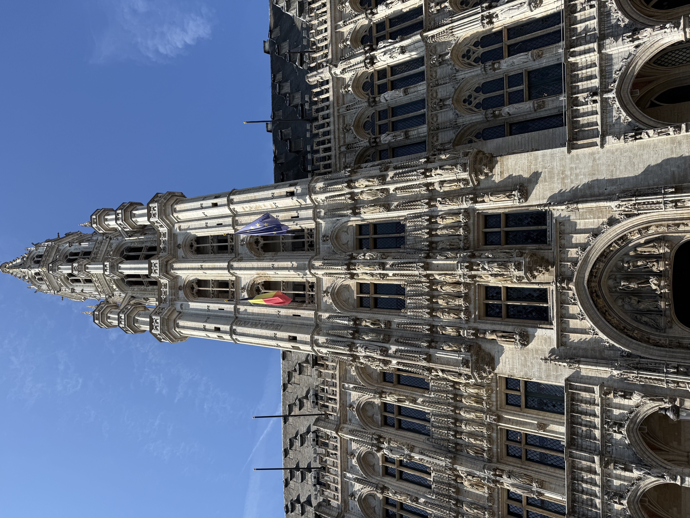

About This Trip
Last summer I travelled through two of Europe's most iconic cities: Paris, the city of lights, and Brussels, the heart of Belgium. From grand monuments to delicious food, this trip was full of unforgettable moments. This page is a small travel journal of my favourite memories from each city.
Paris, France
Paris greeted me with wide boulevards, historic architecture, and the unmistakable silhouette of the Eiffel Tower. Walking along the Seine and exploring charming neighbourhoods made every day feel like a postcard. The food, the cafés, and the art museums left a lasting impression on me.


Brussels, Belgium
Brussels surprised me with its mix of historic charm and modern flair. The Grand Place, the Atomium, and the smell of fresh waffles on every corner made the city feel warm and welcoming. It was the perfect ending to an amazing trip.


Highlights
- Seeing the Eiffel Tower light up at night
- Walking through the streets of Paris
- Visiting the Atomium in Brussels
- Tasting authentic Belgian waffles and chocolate